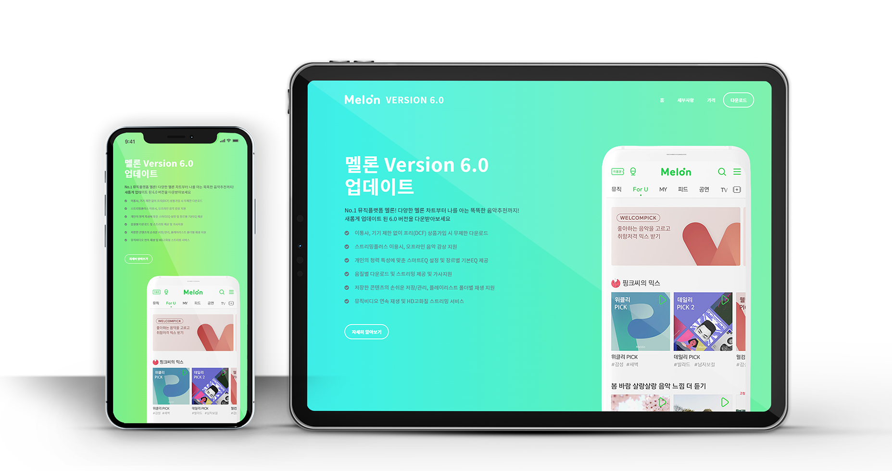

melon app
반응형 풀페이지
bootstrap
활용 제작

melon app
반응형 풀페이지
bootstrap
활용 제작
음악 어플 Melon의 버전 6을 홍보하기 위한 반응형 풀페이지를 Bootstrap을 활용하여 제작하였습니다
심플하고 깔끔한 느낌을 주기 위해 직선적 형태가 특징인 Noto Sans체를 사용하여 가독성을 높였습니다
멜론의 상징적인 색인 초록색 계열을 활용하여 따뜻하고 친근한 느낌을 주는 색을 선택했습니다